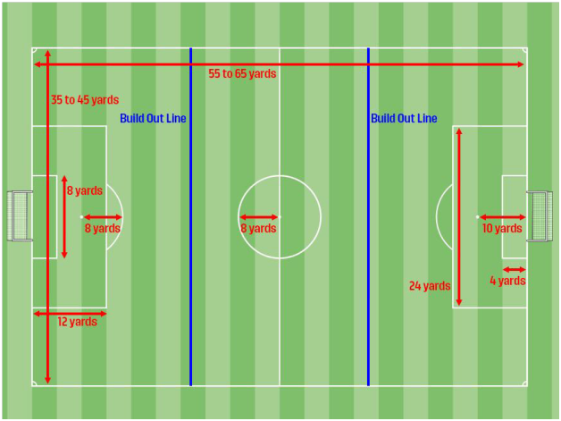

Effective in the Fall of 2016, the USSF has adopted several initiatives for player development in the U9/U10 age bracket.
- Field size changes
- Length 55 – 65 yards
- Width 35 – 45 yards
- Age guidelines – birth year starting from January 1st to December 31st
- Small-sided venues – 7 v 7 (6 field players and 1 goalkeeper), games may not start or continue if there are less than 5 players on the field.
- Heading Protocols – due to the new Concussion Initiatives – deliberate “heading of a soccer ball will result in an indirect free kick from the spot of the offense.
- Goalie – punting regulations – there will be NO punting by goalies for all U9/U10 age groups.
- Goal sizes – maximum goal sizes will now be height – 6.5’ x Width 18.5’
- Ball Size – 4
The last portion of the new USSF Guidelines for Player Development will be the use of Build-Out Lines on all U9/U10 fields. While our fields are outlined designating all side-lines, end-lines, goalie boxes, penalty arcs, mid-field line, and penalty shot areas in “white paint” the new Build-Out Lines will be designated in “blue paint”.
Below will be an outline to be reviewed by all (effective immediately) for explanations for the new Build-Out Lines.
Build-Out Line
- The Build-Out Lines will be used to denote where offside offenses can be called.
- Players cannot be penalized for an offside offense between the halfway line and the build out line.
- Players can be penalized for an offside offense between the build out line and goal line.
- The Build-Out Lines promotes playing the ball out of the back in a less pressured setting.
- When the goalkeeper has the ball, either during play (from the opponent) or from a goal kick, the opposing team must move behind the Build-Out Line until the ball is put into play.
- Once the opposing team is behind the build out line, the goalkeeper can pass, throw or roll the ball into play (punting is not allowed).
- After the ball is put into play by the goalkeeper, the opposing team can cross the build out line and play resumes as normal.
- If a goalkeeper punts the ball, an indirect free kick will be awarded to the opposing team from the spot of the offense. If the punt occurs within the goal area, the indirect free kick should be taken on the goal area line parallel to the goal line at the nearest point to where the infringement occurred.
